Projects
StudyFury
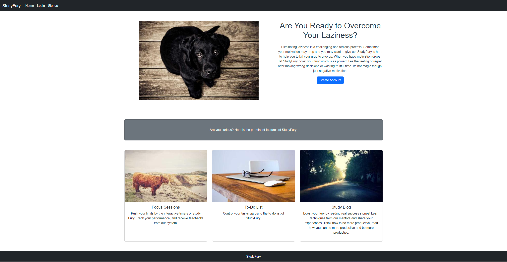
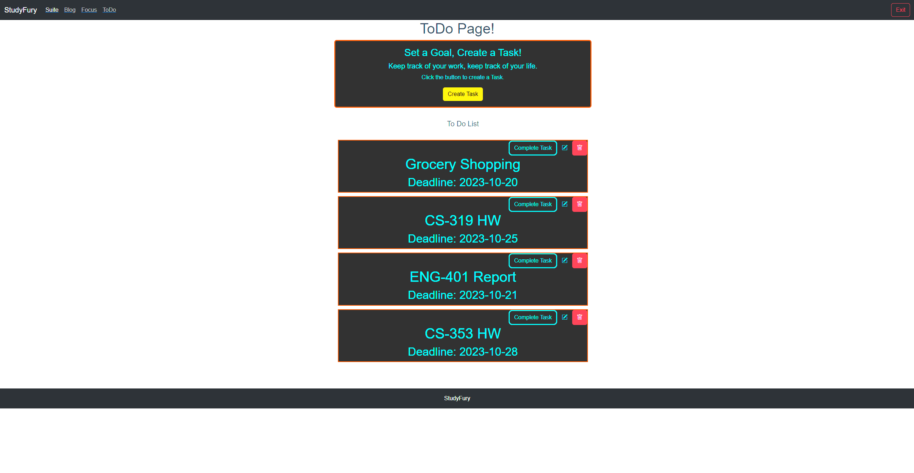
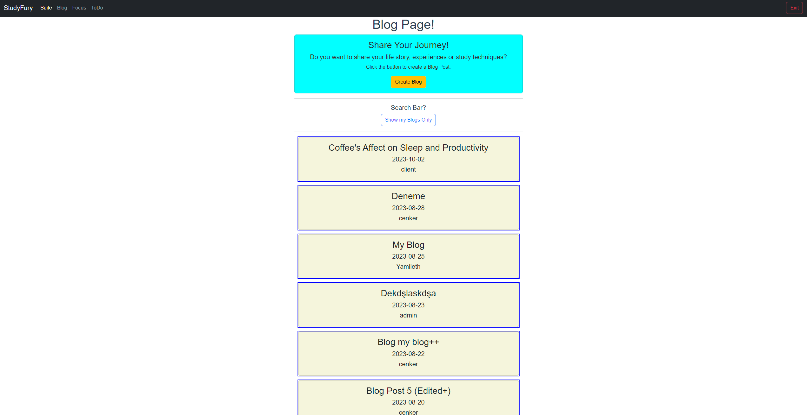
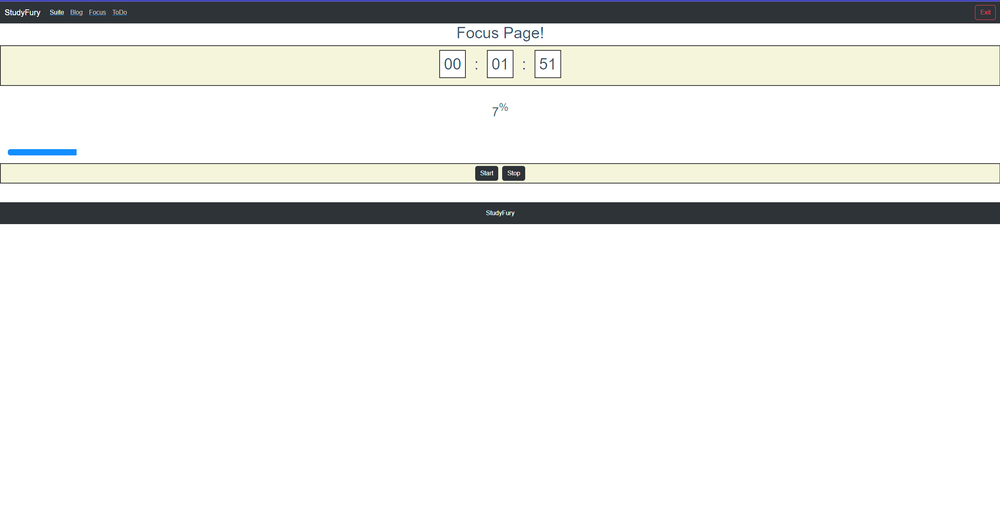
Used Skills: MongoDB, Express.js, Vue.js, Node.js.
StudyFury is a productivity app where people can track and boost their productivity. StudyFury has four features: a statistics
page where people can find detailed statistics about their short-term and long-term productivity, a focus timer where they can
focus on their tasks, a blog page to meet people with strong ambitions and to share their journey with other people, and a to-do
list to track long and short term tasks. Every completed task, focus session, blog entry, and comment is rewarded. This reward
mechanism aims to increase the productivity of users. MEVN stack is used in this project. The authorization system amplifies the
security by using double JSON Web Tokens (refresh and access tokens). Just as the users of StudyFury, StudyFury improves itself day
by day. Optimization updates and StudyFuryAi weekly feedback are planned as future updates.
GitHub Link for Client GitHub Link for Server
CRUDPage
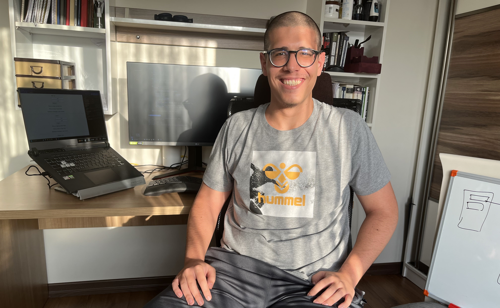
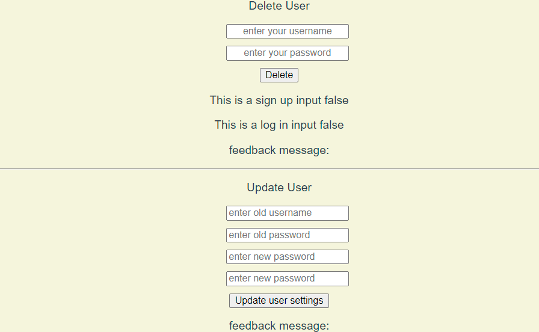
Used Skills: MongoDB, Express.js, Vue.js, Node.js.
A basic client-server project which is capable of making CRUD operations. Vue Js framework is used on the client side.
MongoDB, Node Js-Express Js is used on the server side. With this project, users can be created, user log-in operations
can be executed, users can be deleted, and user information can be updated. CRUDPage is a stepping stone project for much
more complex and valuable projects.
GitHub Link for Client GitHub Link for Server
Register++
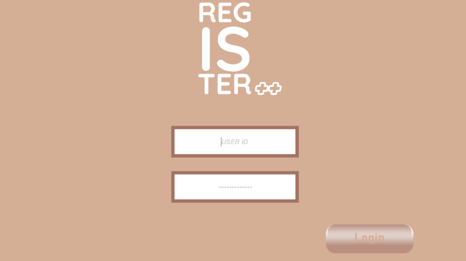
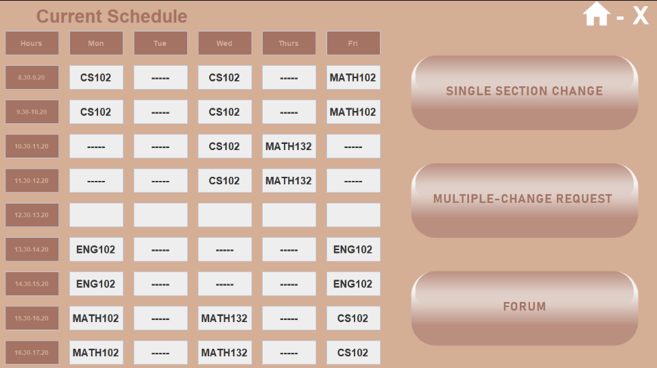
Used Skills: Java.
Register++ is a third-party desktop app developed for educational institutions. In educational institutions' section change process,
when a place opens, the first person to see it has that place. This procedure means the section change process depends on timing.
Register++ automates the section change process, students can create single or multi-section change requests, and when there is an empty
place in desired section/s, the system executes the first request that is made towards that empty space. This project uses REST API, MongoDB,
Java, and Apache Netbeans. With this project, students do not have to wait in front of their computers for hours, refreshing the page every 30
seconds, waiting for a place to open in the course section they desire. Register++ is developed within a semester with a team of five.
GitHub Link
Portfolio Page
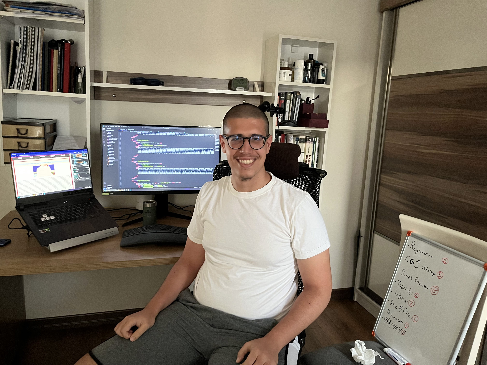
Used Skills: HTML, Css.
Portfolio Page Project is this website. This website is developed using HTML and CSS. Although this website is static, a
server integration is planned as a future improvement.
GitHub Link
Heritage of Roots
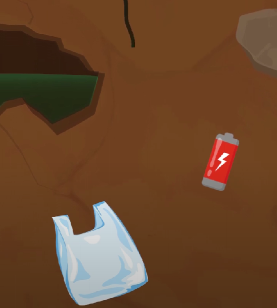
Used Skills: Unity, C#.
Heritage of Roots is a two-dimensional endless runner game. In the game, the player controls a tree's root and avoids colliding with trash.
The game emphasizes the pollution problem of today's world and how humanity is differentiated from its roots. The game offers a solution:
remembering the heritage of roots. Besides its message, Heritage of Roots contains power-ups, different types of obstacles, and moving obstacles.
The developer team created the majority of the sounds of the game. The game is developed by a team of six, working non-stop for two days in the
Game Circle Global Game Jam event.
Video of the Gameplay GitHub Link
Wind Tunnel Simulation
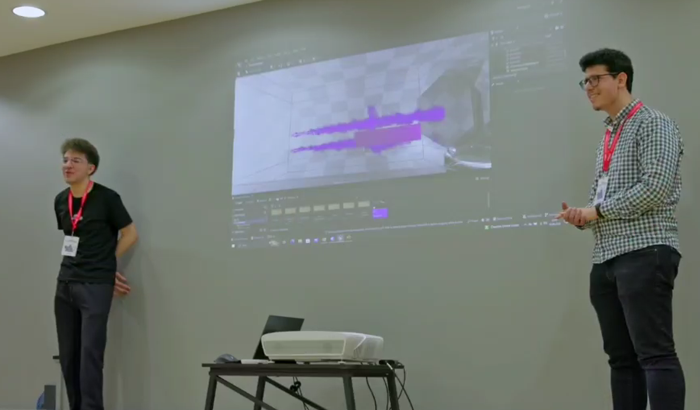
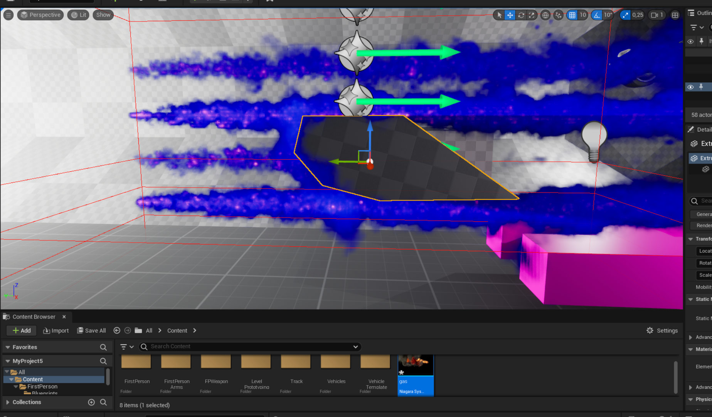
Used Skills: Unreal Engine 5.
Wind Tunnel Simulation is a project made using Unreal Engine 5. This project is done for the Infinia Software Development Hackathon,
which is made in 24 hours with non-stop working with a team of two, which is appreciated by the jury and can make it to the final round.
Wind tunnels are large tubes with air moving inside. The tunnels are used to copy the actions of an object in flight. In this project, users
can move inside the wind tunnel, grab objects, expose them to the moving air, and observe their aerodynamic behavior. There are ten different
objects, including a plane wing, a sports car, and a sphere. Users can change the speed of gas, heat, and gas density.
GitHub Link
Fire & Fire
Used Skills: Java, MySQL.
Fire & Fire is a top-down shooter game. In this game, Java is used for game physics, Apache Netbeans is used for GUI, and MySQL
is used for user registration. Unlike most other top-down shooter games, this project is planned to be a PVP game. Fire & Fire is
still in the development process; the game's physics has been created, and the connection with the database is completed; however,
the PVP infrastructure is not created yet.
GitHub Link
Single-Cycle Processor in System Verilog
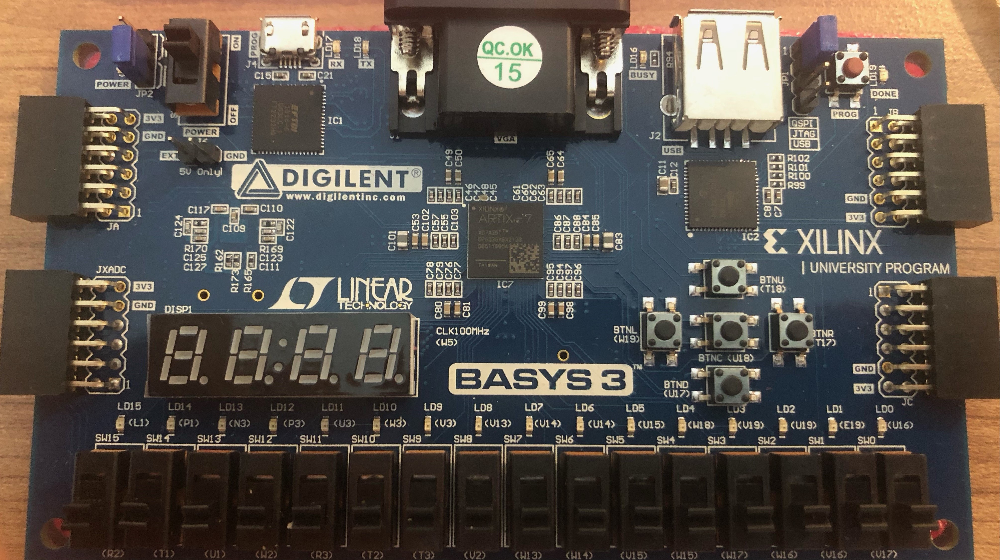
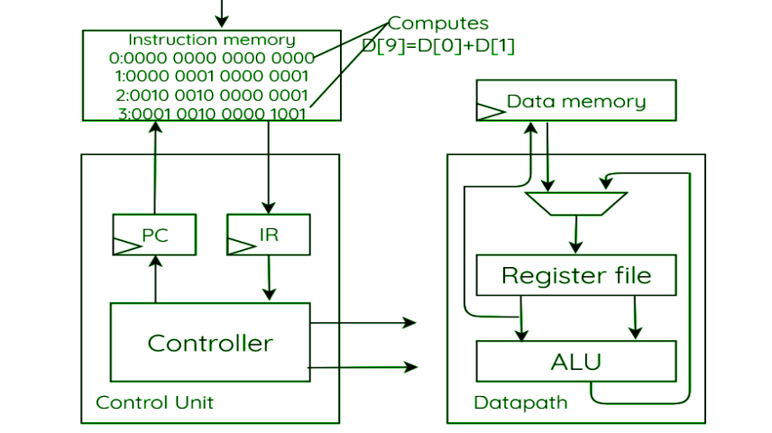
Used Skills: SystemVerilog.
SystemVerilog Code for a modified single-cycle processor. This code Basys3 FPGA board can act like a single-cycle processor and execute basic
arithmetic and logic operations according to the entered instructions. Also, the FPGA board shows the results via Seven segment display. With
this project, I developed a sound understanding of SystemVerilog.
GitHub Link